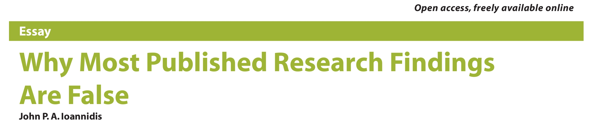
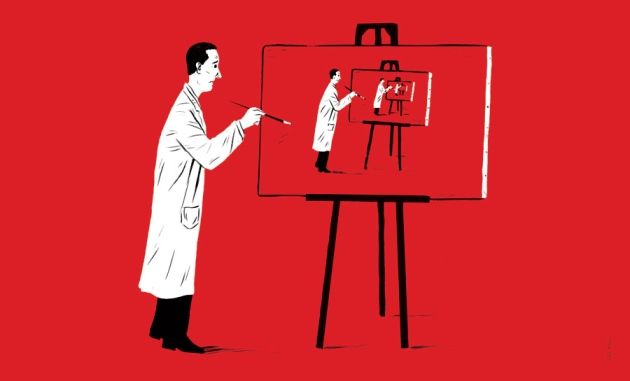
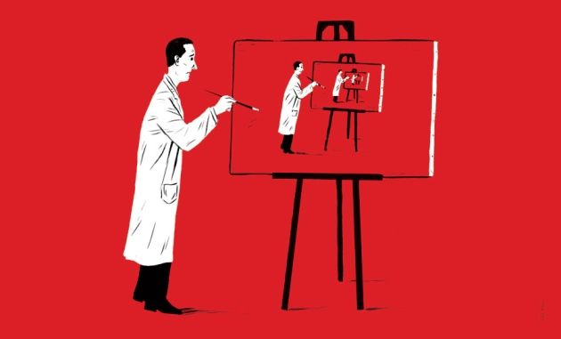
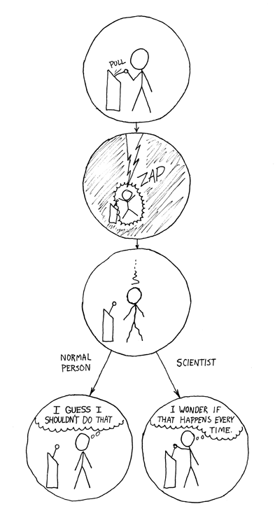
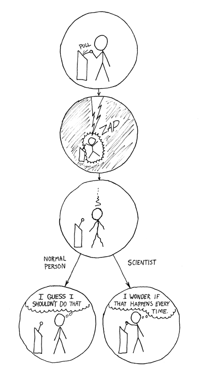

Casting doubt upon scientific findings
- "It ain't so much the things we don't know that get us into trouble. It's the things we know that just ain't so." Uncertain source.

Plos Medicine, 2005
Some links to its media coverage
- "Basic research is like shooting an arrow in the air and , where it lands, painting a target." Homer Adkins
This I believe in genetics: discovery can be a nuisance, replication is science, implementation matters
John P. A. Ioannidis, 2013, frontiers in Genetics


 



 
